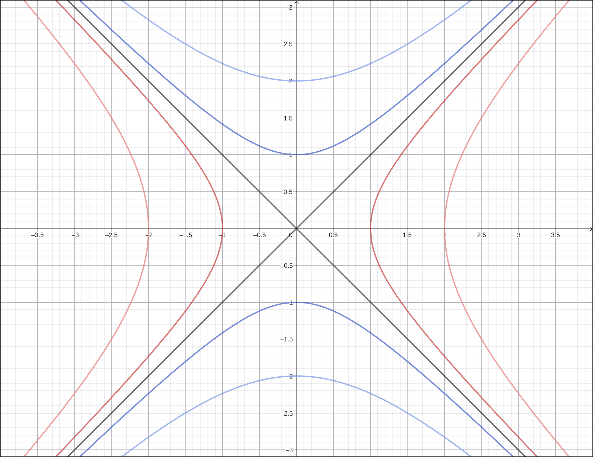

1. A.4, Silla de montar
Enunciado. Para el paraboloide hiperbólico $z=x^2-y^2$: (a) obtenga las trazas con $x=0$, $y=0$ y $z=0$; (b) determine las curvas de nivel $z=c$ e interprete su forma para $c>0$, $c=0$ y $c<0$; (c) bosqueje la superficie.
Procedimiento
Trazas con planos coordenados.
- $x=0$: queda $z=-y^2$, una parábola que abre hacia abajo en el plano $yz$.
- $y=0$: queda $z=x^2$, una parábola que abre hacia arriba en el plano $xz$.
- $z=0$: $x^2-y^2=0$, es decir $(x-y)(x+y)=0$: las rectas $y=x$ y $y=-x$, que se cruzan en el origen.
Curvas de nivel $z=c$. La ecuación $x^2-y^2=c$ describe una familia de hipérbolas:
- $c>0$: $\dfrac{x^2}{c}-\dfrac{y^2}{c}=1$, ramas abiertas hacia $\pm x$.
- $c=0$: las dos rectas degeneradas de arriba.
- $c<0$: escribiendo $y^2-x^2=-c$, ramas abiertas hacia $\pm y$.
Las trazas verticales son parábolas con aberturas opuestas y la orientación de los niveles rota 90° al cruzar $c=0$. Esas dos lecturas describen la silla: la superficie sube en una dirección y baja en la otra, con el cruce en el origen.

Respuesta
Trazas verticales: $z=-y^2$ y $z=x^2$ (parábolas de abertura opuesta). Corte $z=0$: el par de rectas $y=\pm x$. Niveles: hipérbolas con el eje real orientado según el signo de $c$. La superficie es un paraboloide hiperbólico (silla de montar) con punto silla en $(0,0,0)$.